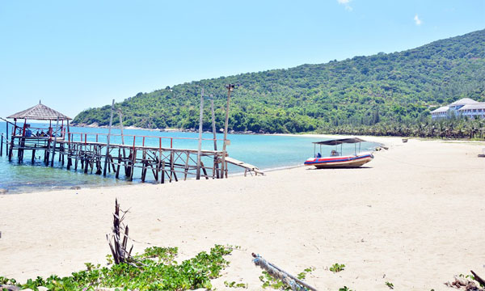
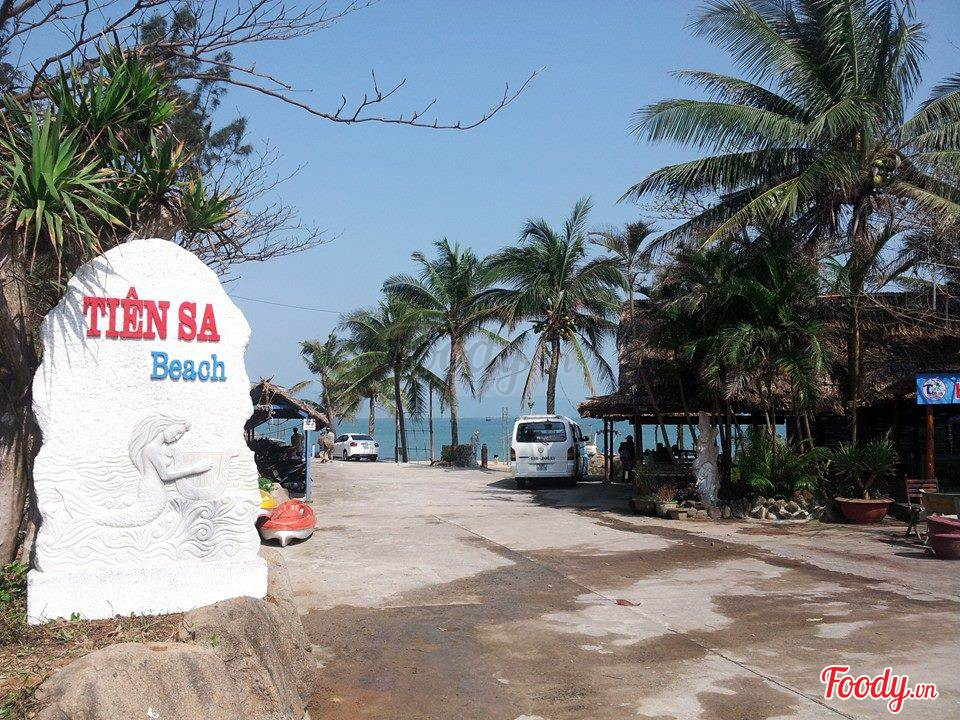

Tiên Sa
Địa Điểm Du Lịch Sinh Thái
Đến du lịch đà nẵng, bạn sẽ không chỉ bị mê hoặc bởi vẻ đẹp của những bãi biển xanh mát trải dài hay sự độc đáo của những cây cầu mà còn có nhiều khu du lịch sinh thái tuyệt đẹp. Một trong số đó phải kể đến là khu du lịch sinh thái Tiên Sa Đà Nẵng. Đến đây, bạn sẽ tha hồ hòa mình vào thiên nhiên, đắm mình trong làn nước trong xanh và tham gia nhiều trò chơi thú vị.
Chắc hẳn không ít người thắc mắc tại sao khu du lịch sinh thái này có tên gọi là Tiên Sa. Thực chất nó bắt nguồn từ truyền thuyết gắn liền với vẻ đẹp của nơi này. Tương truyền rằng, các nàng tiên mê cảnh đẹp của bán đảo Sơn Trà đã rủ nhau xuống đây dạo chơi, ngắm cảnh trần gian. Tiên Sa bốn mùa tươi mát, có cây xanh, những đồi núi gập ghềnh, những con sóng tung bọt trắng xóa và cả những chiếc thuyền, những người ngư danh đánh bắt cá bên bán đảo. Đây cũng chính là địa điểm du lịch hút khách địa phương rất nhiều.
Khu du lịch sinh thái Tiên Sa là một điểm thu hút khách ở Đà Nẵng. Bị quyến rũ bởi vẻ đẹp lạ thường đó, các nàng tiên không ngày nào là không xuống đây để được mãn nhãn với cảnh sắc của núi đồi và biển trời bao la, để được say sưa trong tiếng chim hót. Những nàng tiên đã không thể kiềm lòng, phải cởi đôi cánh của mình và đắm mình trong làn nước biển xanh. Rồi đến một ngày đẹp trời, có chàng trai chài lưới nhìn thấy các nàng tắm mà lòng xôn xao. Chàng đã lấy bộ cánh của nàng tiên đẹp nhất. Nàng tiên sau khi tắm xong đi tìm đồ của mình đã bắt gặp ánh mắt của chàng và rồi rung động trước lời cầu hôn của chàng ngư dân mà quyết định ở lại trần gian.
Tương truyền nơi đây từng thu hút các nàng tiên bởi vẻ đẹp tuyệt trần. Hai người hòa hợp và sống với nhau rất hạnh phúc. Tuy nhiên, cho đến một ngày khi Ngọc Hoàng không thấy con gái quay trở về đã nổi giận làm mưa giông và bão tàn phá trần gian. Vì thế, nàng phải quay trở về để lại người chồng ngày đêm thương nhớ. Kể từ đó, chàng trai cũng quên ăn quên ngủ, đến cuối cùng đã hóa thành đá. Nàng ở thiên giới nghe tin khóc lóc thảm thiết, Ngọc Hoàng cũng rụng động nên thôi làm dữ. Trở về sau, hạ thế an yên hẳn và để biết ơn đôi vợ chồng này, người dân đã đặt cho bãi biển này là Tiên Sa. Đến tận bây giờ nó vẫn giữ nguyên dáng vẻ xinh đẹp đầy mê hoặc ấy.
Khu du lịch sinh thái biển Tiên Sa Đà Nẵng tọa lạc cuối con đường Yết Kiên, thuộc quận Sơn Trà, thành phố Đà Nẵng, cách trung tâm thành phố khoảng 9 km. Địa điểm này nằm giữa vùng non nước rộng lớn, thuộc khu bảo tồn thiên nhiên bán đảo Sơn Trà, có hòn Mồ Côi truyền thuyết và bãi tắm Duyên Thùy lãng mạn. Đây từng là nơi ngự lãm của vua Minh Mạng và vua Khải Định. Còn bây giờ nó đã trở thành địa điểm dừng chân lý tưởng cho những chuyến du lịch, dã ngoại vui chơi,… của du khách.
Đà Nẵng là trung tâm của miền Trung – Tây Nguyên, là thành phố thuộc vùng duyên hải Nam Trung Bộ. Mang kiểu khí hậu nhiệt đới gió mùa, do được đèo Hải Vân chắn gió nên nhiệt độ ở đây quanh năm cao và ít biến động. Đây là nơi đan xen giữa khí hậu miền Bắc lẫn miền Nam với 2 mùa rõ rệt mà mùa khô kéo dài từ tháng 1 – tháng 8 và mùa mưa từ tháng 9 – tháng 12. Thỉnh thoảng có những đợt rét những không căm và không kéo dài lắm.
Đà Nẵng không có thời tiết quá nóng nên dường như bạn có thể đến đây vào bất cứ thời điểm nào trong năm. Tuy nhiên, để có có thể khám phá thêm nhiều điểm, tận hưởng trọn vẹn nét đẹp của thành phố đáng sống bạn nên theo dõi thời tiết và lựa chọn khoảng thời gian thích hợp nhất.
Theo kinh nghiệm du lịch Cát Tiên Sa Đà Nẵng của những bạn trẻ đi trước chia sẻ lại rằng, thời điểm ghé thăm khu du lịch này lý tưởng nhất là từ tháng 2 đến tháng 9. Bởi thời tiết vào lúc này rất mát mẻ, nắng đẹp, ít sương mù và rất hiếm mưa. Điều này sẽ giúp bạn có một chuyến trải nghiệm thuận lợi và an toàn hơn bao giờ hết. Những tháng khác, từ cuối tháng 9 đến tháng 12 rơi vào mùa mưa, nhiều sương mùi, thậm chí còn xuất hiện cả bão gây khó khăn cho di chuyển. Hơn nữa, bạn sẽ không thể tham gia và tổ chức các hoạt động ngoài trời
Mặc dù đã có từ lâu đời nay nhưng đến tận bây giờ, Tiên Sa vẫn giữ được dáng vẻ xinh đẹp vốn có của mình, một vẻ đẹp mà ai khi khi nhìn thấy cũng phải say lòng. Du khách nếu đến du lịch Đà Nẵng và đã dừng chân tại bán đảo Sơn Trà thì đừng quên Tiên Sa, nơi sẽ mang đến cho bạn rất nhiều ngạc nhiên và nhiều trải nghiệm thú vị.
Đến đây bạn sẽ ngạc nhiên với vẻ đẹp của nó. Nằm ở độ cao 693 m so với mực nước biển, nhìn từ trên cao khu du lịch sinh thái Cát Tiên Sa trông như một cây nấm với đầu là núi Sơn Trà và thân là bãi cát bồi, tạo nên những bãi cát vàng đẹp đẽ, trong lành. Bãi tắm ở đây được đánh giá vừa sạch vừa đẹp, sóng im, biển lặn và xung quanh là những vách núi. Chính điều này đã tạo nên nét đẹp vừa vùng vĩ nhưng cũng vừa thơ mộng.
Khu du lịch Tiên Sa không chỉ là khu nghỉ dưỡng cho du khách đến tham quan, nghỉ ngơi mà còn là một điểm bảo tồn thiên nhiên đa dạng, phong phú, được bảo vệ theo chế độ rừng cấm quốc gia. Được biết, nơi đây nổi tiếng sở hữu hệ thảm thực vật đặc sắc với nhiều loài động – thực vật quý hiếm như: nai, gà mặt đỏ, voọc chà vá, đười ươi,… không những thế cảnh vật thiên nhiên cũng là điểm nhấn ở đây. Đến đây, bạn sẽ được thoải mái hòa mình vào thiên nhiên, thăm thú các loài động vật quý hiếm mà trước giờ chưa bao giờ nhìn thấy và còn rất nhiều điều hấp dẫn khác đang chờ đợi bạn khám phá.
Như đã nói, biển ở khu du lịch sinh thái Tiên Sa Đà Nẵng nổi tiếng trong xanh và sạch cùng với đó là bờ cát vàng thoai thoải. Vì thế, chắc chắn bất kỳ du khách nào khi tới đây cũng không thể bỏ qua. Bạn có thể dạo chơi trên bờ biển và ngắm nhìn cảnh sắc, hoặc đắm mình trong làn nước biển mát lành. Nơi đây hứa hẹn sẽ mang lại cảm giác thư giãn, yên bình cho du khách.
Như đã nói, biển ở khu du lịch sinh thái Tiên Sa Đà Nẵng nổi tiếng trong xanh và sạch cùng với đó là bờ cát vàng thoai thoải. Vì thế, chắc chắn bất kỳ du khách nào khi tới đây cũng không thể bỏ qua. Bạn có thể dạo chơi trên bờ biển và ngắm nhìn cảnh sắc, hoặc đắm mình trong làn nước biển mát lành. Nơi đây hứa hẹn sẽ mang lại cảm giác thư giãn, yên bình cho du khách.
Du lịch Tiên Sa chỉ tắm biển thôi chưa đủ, du khách sẽ được trải nghiệm rất nhiều những hoạt động thú vị ngay tại bán đảo xinh đẹp này. Một trong những lý do thu hút du khách tới đây đó là có thể tổ chức các buổi giao lưu, dã ngoại lúc rảnh rỗi. Địa điểm này cực lỳ thích hợp cho các hoạt động teambuilding, sinh hoạt cùng nhau. Đặc biệt, gây nhiều hứng thú nhất đó chính là những trò chơi thám hiểm biển như: lặn ngắm san hô, chèo thuyền trên biển hay các trò chơi bóng chuyền bãi biển, trò chơi đồng đội…
Cắm trại tại Tiên Sa Đà Nẵng, tại sao không nhỉ? Hẳn đây sẽ là khoảng thời gian đáng nhớ khi tổ chức một buổi cắm trại bên bãi biển. Bạn sẽ có cơ hội phiêu bồng cùng ánh trăng, lặng nghe tiếng sóng vỗ, ngắm nhìn cảnh đẹp và hòa mình vào thế giới hoang sơ, trong lành. Trong không gian yên tĩnh đêm về, bình yên tận hưởng một chút nhạc, thưởng thức vài ba món ngon và nhâm nhi chút rượu bên bếp lửa hồng thì còn gì tuyệt hơn. Hãy tận dụng những ngày nghỉ cuối tuần đến với địa điểm du lịch Đà Nẵng này cắm trại, nghỉ ngơi sau một tuần làm việc hay học tập vất vả.
Bên trong khu du lịch sinh thái này có các nhà hàng hải sản nằm ngay bên bờ biển với những hàng dừa xanh mát, tầm view đẹp, nơi có rất nhiều món ăn ngon để phục vụ du khách. Du khách có thể vừa dùng bữa vừa ngắm nhìn toàn cảnh thiên nhiên. Ngoài ra, tại những bè cá trên biển bạn có thể thưởng thức hải sản tươi sống với giá thành cực rẻ. Hoặc với những bạn muốn tiết kiệm chi phí và tạo những kỷ niệm khó quên thì mang theo đồ ăn chuẩn bị sẵn và tổ chức BBQ nướng thưởng thức ngay trên biển cùng với mọi người, sẽ rất tuyệt đấy
Hiện tại, địa điểm du lịch sinh thái Tiên Sa sở hữu tất cả 8 bungalow xinh đẹp với 33 phòng ngủ thiết kế sang trọng, đầy đủ tiện nghi, hướng thẳng ra biển. Đây hẳn sẽ là điểm lưu trú mang đến cho bạn và gia đình giây phút nghỉ ngơi thoải mái nhất. Giá phòng ở đây khoảng 400k/phòng/đêm rất rẻ, nên bạn hoàn toàn có thể yên tâm nếu có nhu cầu ngủ qua đêm. Bạn nào muốn tiết kiệm hơn thì có thể ở nhà nghỉ giá rẻ hơn khoảng 200k/phòng/đêm.
Lưu ý:
Không phải ngẫu nhiên mà khu dã ngoại Tiên Sa Đà Nẵng được nhiều người biết tới để khám phá du lịch.
Nhưng để có một chuyến trải nghiệm trọn vẹn ở đây, bạn cần lưu ý thêm một số điều sau:
+ Không vứt rác bừa bãi trong khu du lịch sinh thái, rác thải không chỉ làm mất làm mất vẻ mỹ quan của quang cảnh mà còn tác động xấu đến sự phát triển tự nhiên nơi đây.
+ Đi đúng lối mòn có sẵn hoặc theo hướng dẫn của nhân viên khu du lịch, không ngắt bẻ cành lá hay can thiệp vào đời sống hoa dã.
+ Luôn mặc áo phao khi vui chơi dưới biển để đảm bảo an toàn cho mình và người thân của mình nhé.
Nếu một ngày bạn muốn trốn khỏi thế giới xô bồ, cần tìm một nơi gần gũi với thiên nhiên để xả stress thì hãy đến với khu du lịch sinh thái Tiên Sa Đà Nẵng. Nơi được ví một “cánh đồng đầy gió và nắng vàng” với quang cảnh hoang sơ và không gian thiên nhiên hữu tình sẽ cho bạn một cảm giác dễ chịu và thoải mái nhất.